캄보디아 현장2026.07.27~31
캄보디아 답사 — 공항, 동기 목사님 만남, 캄장신 방문
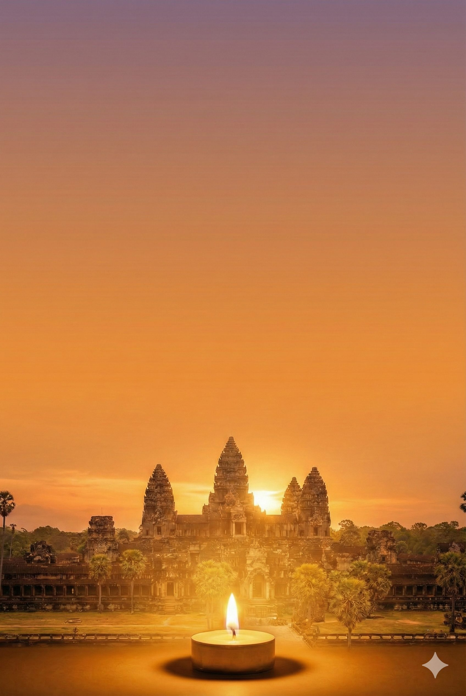
Phnom Penh, Cambodia
비록 작은 불꽃 하나는 약하지만, 동역자님의 기도가 더해진다면
캄보디아를 밝히는 큰 횃불이 될 줄 믿습니다.
왜 하필 캄보디아인가요
오래 품어온 캄보디아를 향한 마음이,
이제 첫걸음이 되었습니다.
2008년, 주님께서 저를 캄보디아에 1년간 단기선교로 보내주셨고
그곳을 향한 마음을 품게 하셨습니다.
2014년, 캄보디아장로교신학교를 방문하며
선교 사역의 꿈을 갖게 되었습니다.
오랜 시간이 흐른 지금,
'작은불꽃' 홍선교(홍성화)가 그 첫걸음을 내딛고자 합니다.
Time Line
확대/축소, 좌우로 이동해서 살펴보세요
Cambodia Story
Mission Media
최근 사진과 영상을 먼저 보여드리고, 지난 준비의 발걸음은 앨범으로 차곡차곡 모아두었습니다.
Family Story
Prayer Letter
기도의 장작을 더해주세요
불꽃은 혼자 타오를 수 없습니다. 여러분의 기도는 선교지의 산소가 되고,
후원은 계속 타오르게 하는 장작이 됩니다. 원하시는 방식을 선택해 주세요.
🙏 지금까지 불러오는 중번 함께 기도했습니다
정기후원 목표 달성률
월 ··· / 목표 ···
캄보디아 선교의 든든한 동역자
보내주시는 후원금은 캄보디아 사역과 현지 신학교 사역을 위해 전액 사용됩니다. 미션펀드를 통해 간편하게 CMS 자동이체를 신청하실 수 있습니다.
정기후원 신청하기마음을 담아 보내는 곳
한 번의 후원도 큰 힘이 됩니다. 아래 계좌로 마음을 전해주세요.
카카오뱅크 3333-05-8716882
예금주 : 홍성화
함께하는 동역자들
지금까지 -명의 동역자님이 기도와 응원의 마음을 남겨주셨어요.
소중한 메시지 감사합니다! 확인 후 승인된 글만 홈페이지에 공개됩니다. 🕯️
방명록을 불러오는 중이에요...
Family Story
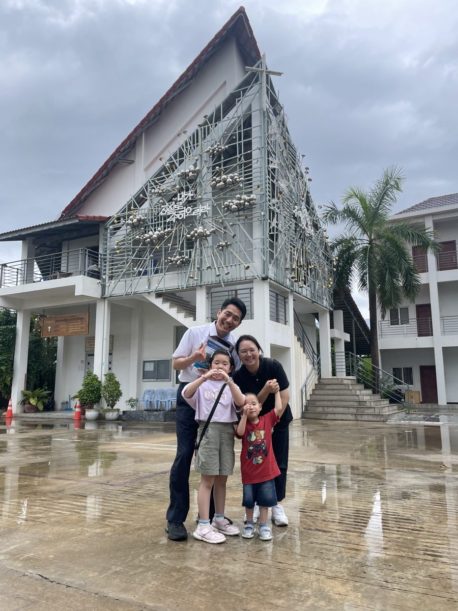
🇰🇭 캄보디아 선교지 답사, 은혜 가운데 다녀왔습니다!
가족과 함께 7.27(월)~31(금)까지 캄보디아 프놈펜으로 선교지 답사를 다녀왔습니다.
🚐 이동에만 11시간, 감사로 채워진 강행군
🚌 대구에서 인천공항까지 버스로 4시간 30분
✈️ 인천에서 프놈펜 공항까지 비행기로 5시간 30분
🚗 공항에서 숙소까지 차량으로 1시간
가는 데만 10시간 이상이 걸리는 고된 강행군이었습니다. 체력적으로 많이 지치고 힘들었을 텐데도 아이들이 불평 없이 너무나 잘 버텨주어 얼마나 감사했는지 모릅니다. 낯설고 피곤한 환경 속에서도 맑게 웃어주는 아름다운이를 보며 뭉클하고 고마운 마음이 들었습니다.
🏫 사역의 현장을 직접 밟고 눈으로 담다
짧은 일정이었지만 현지에서는 타이트한 시간들을 보냈습니다. 가장 먼저 우리 아이들이 다니게 될 학교를 방문해 환경을 둘러보았고, 저희보다 먼저 파송 받아 사역 중인 선교 훈련 동기도 만나 귀한 교제를 나누었습니다. 캄보디아장로교신학교(캄장신) 캠퍼스도 직접 구경하며 현지 사역의 숨결을 흠뻑 느낄 수 있었습니다.
🛒 현실의 벽 앞에서도 확신을 주신 주님
생활과 직결되는 한인 마트부터 현지 마트까지 꼼꼼히 둘러보았습니다. 물건 가격이 한국의 1.5배나 되는 것을 보며 생각보다 높은 물가에 덜컥 놀라기도 했습니다. 하지만 선교회 임원분들과의 만남을 비롯한 모든 일정을 소화하며 저희 부부가 확인한 것은 단 하나였습니다.
"주님께서 우리 가정에게 선교지를 친히 준비시켜주셨고, 앞서 인도하고 계신다!"
높은 물가와 막막한 현실 앞에서도, 여러분이 보내주시는 귀한 후원과 기도가 있기에 저희가 이 길을 담대히 걸어갈 수 있음을 깊이 깨달았습니다. 발걸음마다 동행해주신 하나님께, 그리고 기도로 함께해주신 동역자 여러분께 진심으로 감사드립니다. 🙏
🙏 동역자분들, 이렇게 함께 기도해 주세요.
이번 답사 글과 예산 내용을 나누며, 저희 가정을 위해 함께 두 손 모아주시기를 부탁드립니다. 소명과 은혜: 선교지 답사를 통해 부어주신 은혜와 확신을 잊지 않고, 캄보디아 땅을 향한 주님의 부르심에 늘 기쁨으로 순종하며 나아가게 하소서. 필요한 재정의 공급: 나누어 드린 예산안처럼, 현지의 높은 물가와 아이들 학비라는 현실적인 벽 앞에서도 위축되지 않게 하소서. 사역과 생활에 필요한 재정들이 주님의 은혜 가운데 순조롭게 채워지게 하소서. 가족과 아이들: 남은 파송 준비 기간 동안 온 가족이 영육 간에 강건하게 하시고, 특히 아름이와 다운이가 캄보디아를 향한 하나님의 마음을 품고 기쁘게 준비하게 하소서.
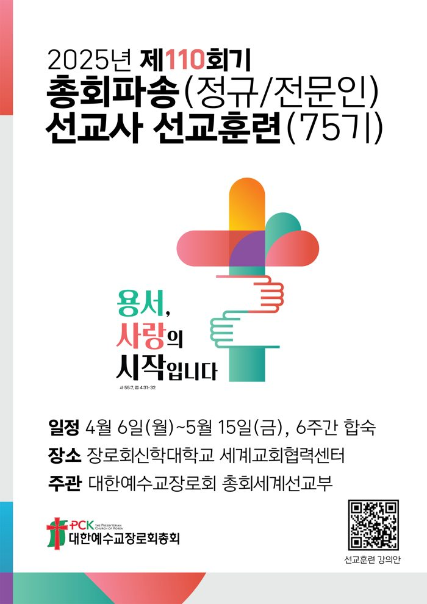
🎉 "PCK 허입 선교사가 되었습니다!" 은혜의 6주 훈련을 마치며 사랑하는 동역자 여러분, 홍선교사입니다. 떨리는 마음으로 면접 합격 소식을 전해드린 것이 엊그제 같은데, 벌써 6주간의 총회 파송 선교사 훈련을 무사히 마치고 감사의 인사를 드리게 되었습니다. 이제 저는 '선교 훈련 교육생'이라는 이름표를 떼고, 'PCK(대한예수교장로회 통합) 허입 선교사'라는 새 이름을 얻게 되었습니다. (허입 선교사란 총회 파송 훈련을 수료하고, 2027년 캄보디아 선교지로 실제 파송되어 떠나기 전까지 불리는 영광스럽고도 무거운 명칭입니다.)
🏫 내 인생 가장 황홀했던 6주간의 시간
지난 4월 6일부터 5월 15일까지, 장로회신학대학교 세계교회협의회에서 합숙 훈련이 진행되었습니다. 하루에 80분씩 무려 4개의 강의를 듣고, 매일 2번의 경건회를 드리는 꽉 찬 일정이었습니다. 몸은 고단했을지 몰라도, 제 인생에서 가장 황홀한 시간이었다고 감히 고백합니다. 수많은 강의 하나하나가 주님께서 친히 먹여주시는 너무도 행복한 가르침이었습니다.
👨👩👧👦 사랑하는 또 하나의 가족, 동기들을 얻다
이번 75기 훈련에는 16가정의 장년 28명과 귀한 선교사 자녀(MK) 18명이 함께 울고 웃으며 훈련을 받았습니다. 6주라는 시간 동안 우리는 그저 교육생을 넘어, 사랑하는 또 하나의 가족이 되었습니다. 같은 마음으로 하나님 나라를 바라보며 함께 걸어갈 든든한 동역자들을 얻은 것은 이번 훈련의 가장 큰 축복입니다.
🎤 반장으로 섬기며 올린 감사의 간증
특별히 이번 훈련 기간 동안 반장으로 섬길 수 있는 귀한 기회가 주어졌습니다. 부족한 자임에도 장신대 채플에서 간증을 전하는 영광스러운 시간도 가졌습니다. 그 자리에 서서, 지금까지 제 삶을 세밀하게 인도해 주신 주님을 고백하며 깊은 감사를 올려드릴 수 있어 참으로 벅찬 순간이었습니다. 📺 간증 영상 보기 : https://youtu.be/As1jfRiB67E
✨ 우리 가족 모두의 고백이 되다
무엇보다 가장 감사한 것은, 곁을 지켜준 아내와 두 아이를 포함한 우리 가족 모두가 "주님께서 우리를 이 자리로 인도해 주셨다"라고 한마음으로 고백하게 된 것입니다. 지금까지 우리 가정을 이끌어 주신 하나님께서 앞으로의 삶에도 늘 함께해 주실 것을 굳게 믿습니다.
🤲 함께 기도해 주세요
이제 막 허입 선교사로서의 첫걸음을 떼었습니다. 앞으로 남은 시간 동안 주님의 마음을 더 깊이 품을 수 있도록 함께 손 모아 주시기를 부탁드립니다. 1️⃣ 우리 가족이 매 순간 하나님의 함께 하시는 은혜를 고백하는 삶을 살게 하소서. 2️⃣ 선교사로서의 첫 마음을 잃지 않고, 파송되는 그날까지 묵묵히 준비해야 할 일들을 지혜롭게 잘 감당하게 하소서. 늘 기도로 동역해 주시는 여러분이 계시기에 홍선교사는 오늘도 기쁨으로 걷습니다. 진심으로 감사합니다! 홍성화 선교사 올림
고된 훈련 끝에 가슴에 달았던 해병대 수료패치(명찰)처럼, 주님 안에서도 자랑스러운 믿음의 패치를 달기 위해 새로운 출발선에 섰습니다.
“주님께 특별하게 쓰임 받고 싶습니다.”
가슴에 품었던 이 기도 제목이 총회 선교 훈련 이라는 귀한 응답으로 돌아왔습니다. 총 한 자루 대신 말씀과 사랑을 들고, 내 생각은 비우고 주님의 시선으로 채우는 훈련이 되기를 기도합니다. 강하게 훈련받아 귀하게 쓰임 받는 홍선교사가 될 수 있도록, 훈련 기간 동안 많은 응원과 기도 부탁드립니다. 묵묵히, 그리고 충성스럽게 나아가겠습니다. 🫡✝️
🗓️ 오늘의 발자취 : 마침내 서류 제출을 완료하다!
오늘 드디어 초회 세계 선교 훈련을 위한 서류를 우편으로 제출하였습니다^^ 오전: 총회 세계 선교 훈련 접수를 위한 필수 서류(졸업증명서 등) 최종 준비 및 꼼꼼한 체크 🗂️ 오후: 아름이와 다운이 하원 후 다 함께 이동하여 여권 사진 촬영 및 신청 완료 📸 결과: 드디어 세계선교부 필요 서류 전면 제출 완료!
🎉 🎞️ 주마등처럼 스쳐 지나간 준비의 시간들
아내와 함께 서류를 제출하고 나니, 그동안 우리가 참 열심히 달려왔다는 생각이 벅차올랐습니다. 2027년을 바라보며 준비해 온 모든 순간들이 떠올랐습니다.
🏥 서울까지 오가며 받았던 건강검진과 심리검사
📖 바쁜 육아의 틈을 쪼개어 치열하게 감당했던 독서 과제들
🇰🇭 현지 선교회 동역자분들과의 긴밀한 연락 및 비행기 티켓팅
⛪ 당회 보고를 비롯해, 성도님들을 향한 마음을 담아 선교 일정과 조율하며 잡았던 심방 약속들
💌 귀한 후원자분들을 위해 정성껏 브로셔를 만들고, 연락을 드리며 받았던 뜨거운 기도와 응원
🙏 은혜와 감사, 그리고 새로운 시작
이 모든 굵직한 과정들이 머릿속을 스쳐 지나가며, 결국 이 모든 발걸음을 친히 인도해주신 주님께 깊은 감사 를 드리게 됩니다. 지금까지 우리의 손을 붙잡고 세밀하게 인도해주신 주님께서, 앞으로 펼쳐질 선교의 여정 또한 신실하게 이끌어 주실 것을 믿고 기도하며 하루를 마감합니다. 참으로 뜻깊고 감사한 하루였습니다. 묵묵히, 그러나 기쁨으로 이 길을 계속 걸어가겠습니다. ✝️
🧠 서류 준비 중 다시 마주한 저의 MBTI
여러 서류들을 정리하다 예전에 받아둔 MBTI 검사지도 다시 꺼내보게 되었습니다. 결과는 여전히 ESTJ — 저는 그 유명한 T 남자입니다 😅
📱 연락처를 열고 한참을 망설였습니다.
기도 후원을 부탁하고자 연락처를 열었습니다 참 반가운 분들이었지만 많은 염려가 있었습니다 혹시나 나의 연락이 부담이 되지는 않을까, 오랜만의 안부가 뜬금없어 보이지는 않을까. 보내기 버튼을 누르기까지 수십 번 고민을 했습니다. 하지만 그건 저의 작은 걱정 에 불과했습니다.
💌 "함께 기도할게", "응원한다"
조심스럽게 보낸 메시지에 돌아온 답장들은 생각보다 훨씬 뜨거웠습니다. 한 분, 한 분이 보내주신 짧은 격려의 메시지와 이모티콘, 그리고 기꺼이 기도의 동역자가 되어주시겠다는 약속들. 카톡으로 연락을 주실 때마다, 막막했던 선교의 길이 외롭지 않은 꽃길 로 변하는 것을 느꼈습니다.
"아, 나는 혼자 가는 게 아니구나." "나에게는 이렇게 든든한 기도의 '빽'이 있구나."
💪 여러분이 저의 가장 큰 힘입니다
보내주신 그 마음들이 저에게는 그 어떤 후원금보다 강력한 에너지가 되었습니다. 지치지 않겠습니다. 두려워하지 않겠습니다. 여러분이 뒤에서 기도로 밀어주신다는 사실을 기억하며, 저는 오늘도 힘차게 짐을 싸고 준비하겠습니다. 저의 '작은 불꽃'에 '기름'을 부어주신 모든 분께 진심으로 감사드립니다. 이 뜨거운 마음 안고, 캄보디아를 향해 더 힘차게 나아가겠습니다!
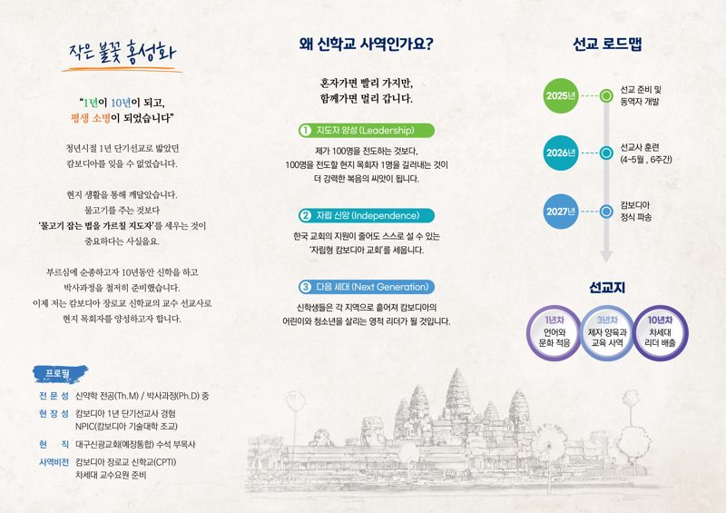
💌 저의 비전과 고백을 한 장에 담았습니다.
지난 10년의 준비, 그리고 앞으로 캄보디아 땅에서 펼쳐질 소망들. 말로 다 전하기엔 벅찬 그 마음들을 꾹꾹 눌러 담아 선교 홍보 브로셔 를 만들었습니다. 이 브로셔는 단순한 홍보물이 아닙니다. 저의 지난 날의 간증 이자, 앞으로 하나님께서 행하실 일들에 대한 미리 보는 약속 입니다.
📝 무엇이 담겨 있나요?
🌱 Vision : 2008년 단기선교로 시작된 씨앗이 어떻게 자라났는지
🔥 Mission : 캄보디아의 다음 세대를 세우는 '교육 선교'의 구체적인 그림
🙏 Prayer : 저와 함께 걷는 동역자가 되어주실 분들을 위한 초대
"혼자 가면 빨리 가지만, 함께 가면 멀리 갑니다."
이 작은 종이 한 장이 캄보디아를 향한 기도의 불씨를 옮기는 도구가 되기를 소망합니다.
정신없는 연말입니다. 교회 사역으로 몸은 참 분주하지만, 마음 한구석은 오히려 더 큰 기대감으로 부풀어 오르고 있습니다. 잠깐 짬을 내어 하나씩 선교 준비를 해나갈 때마다, 비로소 '아, 내가 살아있구나!' 하는 느낌이 듭니다. 드디어 캄보디아행 티켓팅을 마쳤습니다!
🎫 선교회 현지 면접을 위한 짧은 여정
이번 출국은 선교회 현지 면접을 위한 짧은 여정 이지만, 제게는 그 어느 때보다 떨리고 중요한 발걸음입니다. 특별히 이번에 제가 도착하게 될 곳은 프놈펜의 새로운 관문, 떼쪼(Techo) 신공항 입니다. 캄보디아의 새로운 변화를 상징하는 그곳에 첫발을 내딛게 된다니 더욱 기대가 됩니다. 이 벅찬 기대감을 가득 안고, 이제 송구영신예배를 준비하러 갑니다!
작은 불꽃의 묵상 : “10여년을 인도해주신 하나님“ 당회에서 저를 선교사 훈련을 보내기로 결정한 날 떨리는 가슴으로 이전에 썼던 일기를 꺼냈습니다 그 제목은
“지난 10년간 주님의 인도하신 흔적이 보이는 내 인생”
이었습니다 고등학교 졸업 부터 삶에 큰 일이 있을 때마다 기록한 곳입니다 오늘은 그 일기장에 한 줄을 더 추가했습니다
“대구신광교회에서 선교훈련 허락”
제 인생에서 캄보디아를 가게 되어 다시 가기로 확정된 것은 17년 교수 선교사로 꿈을 꾸며 파송이 확정되기까지는 11년 이 걸렸습니다 그 꿈을 이뤄지기를 기다렸는데 주님께서 이루어 주셨습니다 감사합니다.
✅ 이렇게 기도해주세요
선교 준비를 위해 : 앞으로 교회 후원과 선교 훈련과 심리상담과 건강검진 등 많은 것들을 준비해야 하는데 순조롭게 준비될 수 있도록.
Prayer Letter
안녕하세요, 캄보디아에서 새로운 삶의 여정을 준비하고 있는 홍성화입니다. 유난히 무더웠던 여름을 지나며, 모두 건강히 잘 지내고 계신지 안부를 여쭙습니다. 제가 캄보디아를 마음에 품은 지 18년, 그리고 교수 선교사로서의 삶을 꿈꾼 지 12년이 흘렀습니다. 아득하게만 보였던 그 오랜 꿈이 지난 10개월 동안 하나하나 구체적인 현실이 되어가고 있습니다. 제가 새로운 도전을 위해 어떻게 달려왔는지, 그 치열하고도 감사했던 준비의 시간들을 여러분과 짧게 나누고 싶습니다.
👣 새로운 발걸음을 위한 10개월의 기록
2025. 11. 29 | 선교훈련 승인
18년 꿈의 시작. 오랜 기간 소망해 온 선교 훈련 및 파송 승인을 받으며 첫 단추를 끼운 가슴 벅찬 날입니다.
2026. 01. 08 | 함께 하는 동역자들
응원해 주시는 분들을 확인하다 망설임 끝에 연락을 드렸을 때, 따뜻한 격려와 응원을 보내주신 여러분 덕분에 이 길이 결코 외롭지 않음을 깨달았습니다.
2026. 03. 31 | 선교 훈련 심층 면접
정식 훈련생 선발 심층 면접을 거치며, 제 지난 삶의 모든 경험과 시간들이 지금 이 길을 걷기 위한 준비 과정이었음을 확신하게 되었습니다.
2026. 05. 17 | 총회 파송 선교 훈련 수료
6주간의 합숙 훈련 수료. 동기들과 땀 흘리며 강도 높은 합숙 훈련을 무사히 마쳤고, 마침내 정식 선교사로서의 자격을 얻었습니다.
2026. 07. 27 | 가족과의 선교지 답사
가족과 함께한 프놈펜 현지 답사. 11시간의 고된 이동 시간에도 맑게 웃어준 아내와 아이들과 함께 프놈펜 땅을 직접 밟아보며, 앞으로의 5년, 10년을 더욱 단단하게 다짐하는 시간을 가졌습니다.
📦 다가오는 출국, 그리고 따뜻한 응원의 초대
올해 말까지 현재 맡고 있는 일들을 잘 마무리하고, 내년 1~2월경 드디어 캄보디아로 출국할 예정입니다. 지난 현지 답사를 통해 캄보디아의 물가가 한국보다 높다는 것을 피부로 체감했습니다. 그래서 현지에서 물건을 새로 사는 대신, 한국에서 쓰던 짐들을 컨테이너로 이송하며 최대한 알뜰하고 꼼꼼하게 이주를 준비하고 있습니다. 하지만 낯선 땅에서의 새로운 시작인 만큼, 당장의 거주지 마련부터 아이들 학비, 사역을 위한 이동 수단까지 현실적으로 넘어야 할 산들이 많습니다. 막막할 때도 있지만, 저희 가족의 결단과 도전을 지켜봐 주시는 여러분의 응원이 있기에 용기를 내어 봅니다. 캄보디아에서 교육을 통해 선한 영향력을 나누고자 하는 저희 가족의 의미 있는 발걸음에 든든한 '응원단'이 되어 주시기를 부탁드립니다. 여러분이 보내주시는 작은 관심과 후원이 저희가 캄보디아에 단단히 뿌리내리는 데 큰 힘이 될 것입니다.
🙏 [저희 가족을 위해 이렇게 응원해 주세요]
내년 출국 전까지 남은 기간 동안 건강하게 모든 정리를 잘 마무리할 수 있도록. 타국에서의 낯선 생활(거주지, 학비 등)이 순조롭게 안정되고, 좋은 정착의 길들이 열리도록. 저희 가족 모두가 새로운 환경에 잘 적응하며 씩씩하게 나아갈 수 있도록.
선교사로 파송 받기 위해 넘어야 할 산들이 참 많습니다. 단순히 마음만 있다고 갈 수 있는 길이 아님을 준비하며 깨닫습니다. '초보 선교사'라는 이름을 얻기 위해서도 거쳐야 할 검증과 훈련의 과정들이 이렇게나 많습니다.
👣 홍선교사가 걸어가야 할 과정들
🩺 신체 검사(건강검진) : 선교지에서 사역을 감당할 육체적 건강 확인
🧠 심리 검사 : 선교사로서의 정서적 안정과 적합성 확인
🤝 선교회 면접 : 해당 선교지 선교회의 인터뷰 및 수용 결정 [진행중]
🏃♂️ 총회 파송 훈련 : 선교사로서의 자질, 능력, 신앙 검증
💰 후원 모금 : 교회 및 개인 후원 최소 350만 원 이상 확보
📝 논문 통과 : 파송 전 연구 논문 심사 및 통과
🗣️ 언어 훈련(2년) : 선교지 도착 후 현지어 능통 수준 도달
🎓 CPTI 강사 지원(3년 차) : 캄보디아 장로교 신학교 강의 사역 시작
이 모든 과정이 통과되어야 비로소 '준비된 선교사'로서 온전히 설 수 있습니다.
🎉 "합격입니다!" 선교 훈련 지원자에서 훈련생으로
사랑하는 동역자 여러분, 홍선교사입니다. 캄보디아 단기 일정을 은혜 가운데 마치고 돌아온 지 얼마 되지 않아, 또 하나의 벅찬 소식을 전하게 되었습니다. 드디어 총회 선교 훈련 면접을 무사히 통과하여 정식 훈련생 이 되었습니다!
🚗 아침부터 시작된 떨리는 발걸음
가족들과 함께 부지런히 아침 8시부터 길을 나서서 12시 반에 오리엔테이션 모임을 가졌고, 오후 1시가 넘어 본격적인 면접을 보았습니다. 정말 많이 떨리는 시간이었지만, 총회 선교부 임원분들의 질문에 최선을 다해 저의 부르심과 비전을 나누었습니다.
🧩 모든 준비가 하나의 선으로 연결되다
질문들을 듣고 대답하며 제 마음속에 깊이 다가온 깨달음이 있었습니다. 제가 지금까지 살아오며 겪었던 모든 경험과 귀한 만남들, 그리고 나름대로 애써왔던 준비의 시간들이 마치 오늘 이 면접의 자리를 위해 예비된 것처럼 하나로 모이는 느낌이었습니다. 주님의 세밀하신 인도하심에 다시 한번 전율하는 순간이었습니다.
👨👩👧👦 든든한 가족, 그리고 기대되는 동역자들
이번 여정은 아내와 두 아이가 함께해주어 더욱 든든했습니다. 훈련 기간 동안 아이들을 정성껏 돌봐주실 선생님들을 뵙고, 선교 훈련에 대한 전반적인 안내도 들을 수 있어서 참 감사했습니다. 무엇보다 가장 가슴 뛰었던 것은 그곳에 면접을 온 다른 선교 지원자분들을 만난 것입니다. 앞으로 며칠간 동고동락하며 교육을 받을 동기분들인데, 아직 이름조차 다 모르지만 이분들과 함께 그려갈 시간이 벌써부터 기대가 됩니다.
👣 이제, 진짜 시작입니다!
면접 말미에 "합격입니다"라는 말씀을 듣는 순간, 비로소 '아, 이제 정말 본격적인 시작이구나'라는 생각이 들었습니다. 그토록 바랐던 '총회 선교 훈련 지원자'라는 이름표를 떼고, 이제 '선교 훈련 교육생'이라는 새 이름표를 달게 되었습니다. 너무나 떨리면서도 기대되는 발걸음입니다. 다가오는 부활절에 훈련 장소로 모여,
“4월 6일(월)부터 5월 15일(금)”
까지 합숙 훈련을 받게 됩니다.
🤲 함께 기도해 주세요
지금까지 저의 모든 걸음을 인도해 주신 주님께 깊은 감사를 드립니다. 앞으로 배우고 훈련받는 모든 과정 가운데, 주님께서 저에게 새로운 눈을 뜨게 하시는 놀라운 역사가 있기를 소망합니다. 4월 6일부터 시작되는 선교 훈련 과정 내내 영육 간에 강건하게 하시고, 선교지를 향한 하나님의 마음을 더 깊이 품는 시간이 되게 하소서. 훈련 기간 동안 돌봄을 받을 아이들과 곁을 지켜줄 아내에게 평안을 주시고, 온 가족이 기쁨으로 이 훈련의 시간을 감당하게 하소서. 함께 훈련받는 동기 선교사님들과 아름다운 연합을 이루며, 서로에게 귀한 도전과 위로가 되게 하소서.
"너의 행사를 여호와께 맡기라 그리하면 네가 경영하는 것이 이루어지리라" (잠언 16:3)
늘 기도로 동역해 주시는 여러분이 계시기에 홍선교사는 오늘도 새 힘을 얻습니다. 감사합니다! 홍성화 선교사 올림
선교사로 파송 받기 위해 넘어야 할 산들이 참 많습니다. 단순히 마음만 있다고 갈 수 있는 길이 아님을 준비하며 깨닫습니다. '초보 선교사'라는 이름을 얻기 위해서도 거쳐야 할 검증과 훈련의 과정들이 이렇게나 많습니다.
👣 홍선교사가 걸어가야 할 과정들
🩺 신체 검사(건강검진) : 선교지에서 사역을 감당할 육체적 건강 확인
🧠 심리 검사 : 선교사로서의 정서적 안정과 적합성 확인
🤝 선교회 면접 : 해당 선교지 선교회의 인터뷰 및 수용 결정 [진행중]
🏃♂️ 총회 파송 훈련 : 선교사로서의 자질, 능력, 신앙 검증
💰 후원 모금 : 교회 및 개인 후원 최소 350만 원 이상 확보
📝 논문 통과 : 파송 전 연구 논문 심사 및 통과
🗣️ 언어 훈련(2년) : 선교지 도착 후 현지어 능통 수준 도달
🎓 CPTI 강사 지원(3년 차) : 캄보디아 장로교 신학교 강의 사역 시작
이 모든 과정이 통과되어야 비로소 '준비된 선교사'로서 온전히 설 수 있습니다.
🇰🇭 캄보디아 1박 2일 단기 일정 마무리 & 새로운 시작!
짧지만 너무나도 알찼던 1박 2일간의 캄보디아 일정을 모두 마치고, 이제 밤 12시 비행기를 타고 한국으로 돌아갑니다. 이번 일정 동안 경험한 감사한 일들을 나눕니다.
🤝 2008년의 귀한 인연, 변함없는 동역의 기쁨
2008~2009년에 함께 섬겼고, 지금도 캄보디아에서 변함없이 귀한 사역을 감당하고 계시는 선교사님 내외분을 찾아뵈었습니다. 늘 그렇듯 환한 미소로 반겨주셔서 어찌나 감사했는지 모릅니다. 지난 시간의 은혜를 돌아보며, 앞으로의 비전도 함께 나누는 참으로 귀하고 복된 나눔의 시간이었습니다.
🎉 선교회 입회 공식 결의
가장 먼저, 선교회 면접이 은혜 가운데 잘 끝났습니다. 제가 선교회에 입회하는 것이 공식적으로 결의되어 얼마나 기쁘고 감사한지 모릅니다! 면접 과정에서 많은 선교사님들께서 해주신 실제적이고 현실적인 조언들은 앞으로의 사역을 준비하는 데 정말 큰 도움이 되었습니다.
🏫 캄보디아장로교신학교 방문
평소 정말 가보고 싶었던 캄보디아장로교신학교에 방문했습니다. 그곳에서 교수선교사로 헌신하고 계신 귀한 선교사님들을 직접 뵙고, 앞으로의 일정과 사역 방향에 대해 함께 깊은 이야기를 나눌 수 있었습니다. 마치 꿈만 같은 벅차고 귀한 시간이었습니다.
✈️ 더 힘찬 발걸음으로
짧은 시간이었지만 캄보디아에서 참으로 많은 것을 얻고 돌아갑니다. 한국에 도착하면 이번 일정에서 받은 은혜와 조언들을 바탕으로 더욱 힘을 내서 다음 스텝을 준비하겠습니다. 기도해 주시고 응원해 주셔서 감사합니다! ^^
🤲 함께 기도해 주세요
선교지에 와보니 세부적으로 고려해야할 것들이 많이 생겼습니다 주님의 인도하심을 늘 고백하며 하나씩 잘 준비되고 해결되도록. 진행중인 후원 모금, 훈련, 논문 등이 올 해 안에 잘 마무리 되도록. 캄보디아 땅을 밟고 신학교 강단에 서는 그날까지, 지치지 않고 주님만 의지하며 걷게 하소서.
"사람이 마음으로 자기의 길을 계획할지라도 그의 걸음을 인도하시는 이는 여호와시니라" (잠언 16:9)
주님의 인도하심을 믿으며, 기도로 동역해 주시는 모든 분께 감사드립니다. 홍성화 선교사 올림
선교사로 파송 받기 위해 넘어야 할 산들이 참 많습니다. 단순히 마음만 있다고 갈 수 있는 길이 아님을 준비하며 깨닫습니다. '초보 선교사'라는 이름을 얻기 위해서도 거쳐야 할 검증과 훈련의 과정들이 이렇게나 많습니다.
👣 홍선교사가 걸어가야 할 과정들
🩺 신체 검사(건강검진) : 선교지에서 사역을 감당할 육체적 건강 확인
🧠 심리 검사 : 선교사로서의 정서적 안정과 적합성 확인
💰 후원 모금 : 교회 및 개인 후원 최소 350만 원 이상 확보
🤝 선교회 면접 : 해당 선교지 선교회의 인터뷰 및 수용 결정
🏃♂️ 총회 파송 훈련 : 선교사로서의 자질, 능력, 신앙 검증
📝 논문 통과 : 파송 전 연구 논문 심사 및 통과
🗣️ 언어 훈련(2년) : 선교지 도착 후 현지어 능통 수준 도달
🎓 CPTI 강사 지원(3년 차) : 캄보디아 장로교 신학교 강의 사역 시작
이 모든 과정이 통과되어야 비로소 '준비된 선교사'로서 온전히 설 수 있습니다.
🙏 내일, 그 첫 번째 산을 오릅니다
내일은 이 긴 여정의 첫 번째 관문인 건강검진 이 있는 날입니다. 선교사로서 넘어야 할 수많은 산 중 첫 번째 발걸음입니다. 앞으로 넘어야 할 산이 많지만, 두려움보다는 주님과 동행하며 한 걸음씩 나아가려 합니다. 혼자의 힘으로는 갈 수 없는 이 길, 동역자 여러분의 기도가 절실히 필요합니다.
🤲 함께 기도해 주세요
내일 있을 건강검진(신체검사) 결과가 선교 사역에 적합하게 잘 나올 수 있도록 기도해 주세요. 이어지는 심리검사, 후원 모금, 훈련, 논문 등 모든 과정 속에 주님의 도우심이 함께 하길 원합니다. 캄보디아 땅을 밟고 신학교 강단에 서는 그날까지, 지치지 않고 주님만 의지하며 걷게 하소서.
"사람이 마음으로 자기의 길을 계획할지라도 그의 걸음을 인도하시는 이는 여호와시니라" (잠언 16:9)
주님의 인도하심을 믿으며, 기도로 동역해 주시는 모든 분께 감사드립니다. 홍성화 선교사 올림
사랑하는 동역자 여러분, 평안하신지요? 🌿
지난 수요기도회 말씀을 전하며 저는 이렇게 선포했습니다.
"하나님의 나라에 절대적으로 눈을 뜨고, 우리의 삶을 상대화시키는 것이 참된 그리스도인의 삶입니다."
세상의 가치가 아닌, 영원한 것에 시선을 고정하자 는 고백이었습니다.
예배를 마치고 가족들과 함께 맥도날드에 들렀습니다. 🍟🥤
햄버거 하나를 나누어 먹는 소박한 시간이었지만, 문득 제 마음속에 깊은 울림이 있었습니다. 우리가 무엇을 먹느냐, 어디에 있느냐는 그저 '상대적'인 조건 일 뿐이었습니다. 주님께서 맺어주신 이 가정이 함께 웃고 이야기 나눌 수 있다는 것, 그 자체가 제게는 '절대적'인 행복 이었습니다.
🙏 기도 부탁드립니다
저희 가정이 앞으로 걸어갈 길 위에서, 때로는 상황이 넉넉지 않거나 세상의 기준으로 볼 때 '상대적으로' 연약한 처지에 놓일 수도 있을 것입니다. 하지만 그 어떤 상황에서도 저희 가족이 더욱 하나 되고, 오직 주님만을 의지하며, 주님이 주신 이 절대적인 행복을 놓치지 않도록 기도해 주세요.
환경을 넘어선 감사가 넘치는 가정이 되기를 소망합니다. ✨
📍 목적지:
서울 S교회 (이전 사역지)
📝 목적:
선교 후원 모집을 위한 첫 방문 오늘 드디어 선교 후원을 위한 첫 여정을 시작했습니다. 가장 먼저 제가 사랑하고 섬겼던 S교회를 찾아뵙기로 했습니다. 막상 출발하려니 책임감과 설렘, 그리고 긴장감이 동시에 밀려오네요. 이 마음을 그대로 간직하고 싶어, 차에 시동을 걸기 전 급하게 쇼츠(Shorts)를 하나 찍어 올렸습니다^^ 비록 떨리는 목소리지만, 캄보디아를 향한 저의 진심은 선명합니다. 그 시작의 순간을 영상으로 확인해 주시고, 만남 가운데 하나님의 예비하심이 있기를 기도해 주세요! 🙏
👇 떨리는 출정식(?), 영상으로 확인하기
🇰🇭 동역자 초청
선교는 누군가 홀로 떠나는 길이 아니라, 현장으로 부름받은 자와 그를 파송하고 돕는 자가 함께 완성해 가는 하나님 나라의 거룩한 사역입니다.
비록 몸은 떨어져 있지만, 여러분이 계신 그 자리에서 캄보디아를 기도로 품고 물질로 흘려보내 주실 때, 여러분은 이미 이 땅에 파송된 귀한 '보내는 선교사'입니다. 여러분의 헌신이 캄보디아의 영혼들을 살리고, 현지의 다음 세대를 세우는 기적이 됩니다. 이 가슴 벅찬 동역의 길에 여러분을 초청합니다.
🌿 정기 후원
정기 후원은 캄보디아 땅에 생명의 씨앗을 심고, 그 씨앗이 자라 열매를 맺을 때까지 끝까지 함께해 주시는 가장 든든한 동역입니다.
보내주시는 귀한 후원금은 캄보디아 복음화 사역과 현지 신학교에서 헌신된 다음 세대 목회자들을 길러내는 일에 전액 투명하게 사용됩니다. 여러분의 변함없는 동역은 척박한 땅에서도 사역이 멈추지 않고 전진할 수 있는 강력한 원동력이 됩니다. 미션펀드를 통해 간편하게 CMS 자동이체를 신청하실 수 있으며, 매월 흘려보내 주시는 그 마음과 기도를 기억하며 현지에서 최선을 다해 사역하겠습니다.
💝 일시 후원
일시 후원은 하나님께서 마음에 주시는 특별한 감동을 따라, 선교지의 긴급한 필요를 채우는 귀한 축복의 통로입니다.
크기와 상관없이, 단 한 번의 나눔 안에도 캄보디아를 향한 여러분의 따뜻한 사랑이 담겨 있음을 잘 알고 있습니다. 그 사랑은 결코 작지 않으며, 사역의 현장에서는 막힌 담을 허무는 큰 힘과 위로가 됩니다. 하나님께서 주시는 감동이 있으시다면, 아래 계좌로 그 귀한 마음을 전해주세요. 보내주신 손길이 캄보디아 영혼들에게 온전히 닿을 수 있도록 소중하게 사용하겠습니다.
캄보디아 선교의 든든한 동역자
보내주시는 후원금은 캄보디아 사역과 현지 신학교 사역을 위해 전액 사용됩니다. 미션펀드를 통해 간편하게 CMS 자동이체를 신청하실 수 있습니다.
정기후원 신청하기마음을 담아 보내는 곳
한 번의 후원도 큰 힘이 됩니다. 아래 계좌로 마음을 전해주세요.
카카오뱅크 3333-05-8716882
예금주 : 홍성화
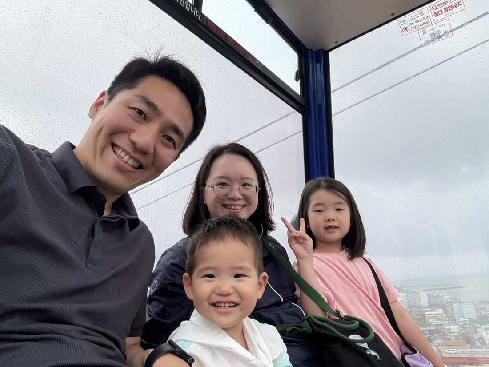
Our Mission
캄보디아는 전체 인구의 60% 이상이 30대 이하인 젊고 역동적인 나라입니다. 하지만 과거 끔찍했던 학살의 역사적 상처와 "현재의 고난은 바꿀 수 없다"는 운명론적 패배주의를 내면에 안고 살아가는 곳이기도 합니다. 저희 부부는 이 척박한 땅에 조건 없는 '은혜'와 '하나님 자녀로서의 정체성'을 전하기 위해 나아갑니다.
저희 부부는 현지인들을 진정한 형제자매로 사랑하며, 좋은 친구가 되어 그리스도의 사랑을 삶으로 증명해 내고자 합니다. 기계적인 사역이 아닌, 영혼을 향한 뜨거운 사랑으로 다음의 두 가지 사역 축을 감당합니다.
교육과 지성 훈련으로 다음 세대 리더 양성
일상의 나눔과 치유가 있는 '사랑방' 상담 사역
Mission Roadmap
점화 · 1년차
불꽃을 피우기 위한 준비 — 현지어 습득과 문화 이해에 힘씁니다.
확산 · 3년차
불꽃 옮겨 붙이기 — 현지 목회자 양성과 교회 사역을 이어갑니다.
승화 · 10년차
스스로 타오르는 불꽃 — 석·박사 전문 목회자를 지도하며 신학의 뿌리를 내립니다.
🤝 협력 선교
저희는 단독 사역을 고집하지 않고 현지 교단(캄보디아 장로교 독노회)과 긴밀하게 연합합니다. 의존성을 키우는 구제가 아니라 스스로 자립할 수 있도록 돕는 것이 저희의 목표입니다. 권한을 쥐는 대신 기쁘게 이양하며, 은퇴 전 현지인 리더들에게 모든 사역 시스템을 온전히 물려주고 떠나는 건강한 선교를 지향합니다.
❤️ 동역 초청
캄보디아의 다음 세대를 세우고 아픈 마음을 치유하는 일은 저희 부부만의 힘으로는 불가능합니다. 저희는 캄보디아 땅에서 가장 먼저 땀 흘리며 온 삶을 다해 헌신하겠습니다. 여러분은 기도로, 물질로 이 땅에 소망을 흘려보내는 '보내는 선교사'가 되어주시지 않겠습니까? 여러분의 동역이 캄보디아를 살리는 가장 위대한 기적이 됩니다!
후원 안내 보기Cambodia Story
캄보디아를 처음 품었던 순간부터, 그 땅에서 만난 사람들과 이야기들을 날짜순으로 나눕니다.
캄보디아 땅에 복음의 씨앗이 심겨진 지 어느덧 오랜 시간이 흘렀습니다. 오늘은 캄보디아 복음화와 현지 지도자 양성의 요람인 캄보디아장로교신학교(CPTI - Cambodia Presbyterian Theological Institute)의 뜻깊은 역사를 함께 나누고자 합니다. 🌱
하나의 장로교회를 향한 아름다운 연합 🤝
한국에는 여러 장로교 교파가 존재합니다. 1993년, 한국의 한인 선교사님들이 처음 캄보디아에 발을 내디딘 이후 약 10년 동안은 각자의 자리에서 헌신하며 사역을 이어갔습니다.
그러던 중 2002년, 선교사님들 마음에 '하나의 캄보디아 장로교회를 세우자'는 귀한 목표가 싹트기 시작했습니다. 그 결과 7개 교단 소속 선교사님들이 교단을 초월하여 연합하였고, 마침내 2003년 7월 '캄보디아장로교공의회'가 아름답게 세워졌습니다. 🕊️
현지 지도자 양성을 위한 신학교의 태동 📖
공의회가 설립된 후, 캄보디아 교회의 미래를 이끌어갈 현지 지도자들을 직접 양육해야 한다는 필요성이 대두되었습니다. 이에 2004년 4월, 공의회 산하 직영 신학교 설립이 결의되었고, 같은 해 10월 5일 드디어 캄보디아장로교신학교가 개교하게 되었습니다.
가장 처음 학교가 시작된 곳은 프놈펜 한인교회의 교육관이었습니다. 이후 10여 년간 한인교회 교육관과 일반 주택을 임대하여 신학교 건물로 사용하며 척박한 환경 속에서도 배움의 열정을 이어갔습니다.
저의 작은 기억, 그리고 새로운 도약 📸
저 역시 바로 이 주택 임대 시절에 신학교를 방문했던 적이 있습니다. 당시 평범한 주택가에 자리 잡았던 신학교 벽면의 글씨를 마음에 담아 사진으로 남겼던 기억이 지금도 새롭습니다.

더 큰 비전을 품고 세워진 현재의 캄장신 🏛️
시간이 흐르며 임대 건물로는 캄장신이 품은 거대한 비전을 다 담아내기에 부족함을 절감하게 되었습니다. 기도의 응답으로 2014년 12월 11일 역사적인 신축 기공예배를 드렸고, 2016년 2월 마침내 은혜 가운데 훌륭한 건물이 완공되었습니다! ✨
현재 캄보디아장로교신학교는 프놈펜뿐만 아니라 씨엠립에 분원을 세워 사역의 지경을 넓혀가고 있으며, 수많은 장로교 교단의 선교사님들이 캄보디아의 영적 부흥을 위해 한마음으로 동역하고 계십니다.
앞으로도 CPTI를 통해 배출될 수많은 현지 사역자들과 캄보디아 교회의 미래를 위해 함께 기도해 주시기를 소망합니다. 🙏
💡 참고 자료: 본 글은 이윤수 선교사님께서 기고하신 '캄장신 역사'를 참고하여 작성되었습니다. 원문 기사 읽기 (코람데오닷컴)
💡 2008년 5월의 기록 — 한국과 참 많이 닮아있던 캄보디아에서의 평온한 주일, 그리고 현지의 강렬한 햇살이 몸에 남긴 재미있는 흔적을 나눕니다.
📖 말씀으로 여는 주일 아침
캄보디아에서의 주일 풍경은 한국과 크게 다르지 않았습니다. 다 함께 모여 진지하게 성경 공부를 하는 것으로 은혜로운 하루를 열었습니다.
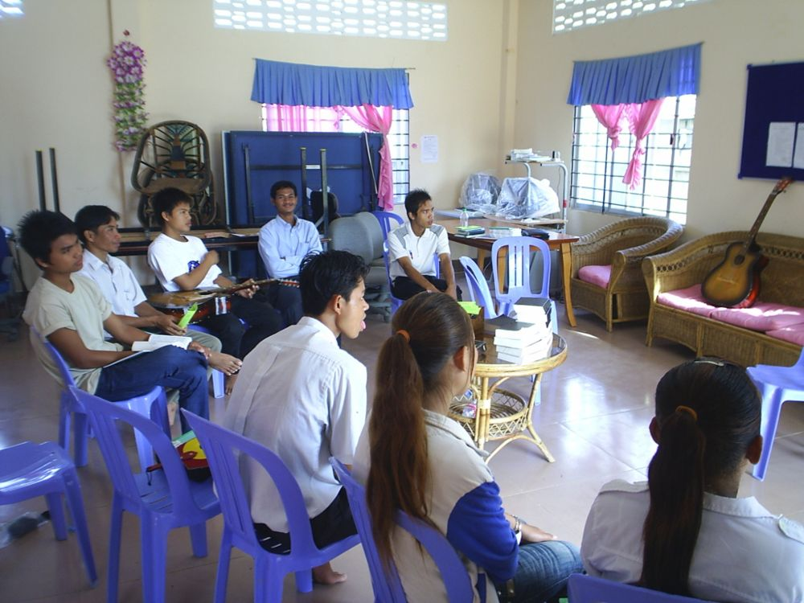
🎶 찬양으로 올려드리는 예배
성경 공부 후에는 한마음으로 찬양을 부르며 본격적인 예배를 시작했습니다. 언어는 달라도 주님을 향한 찬양의 기쁨은 하나로 통하는 귀한 시간이었습니다.
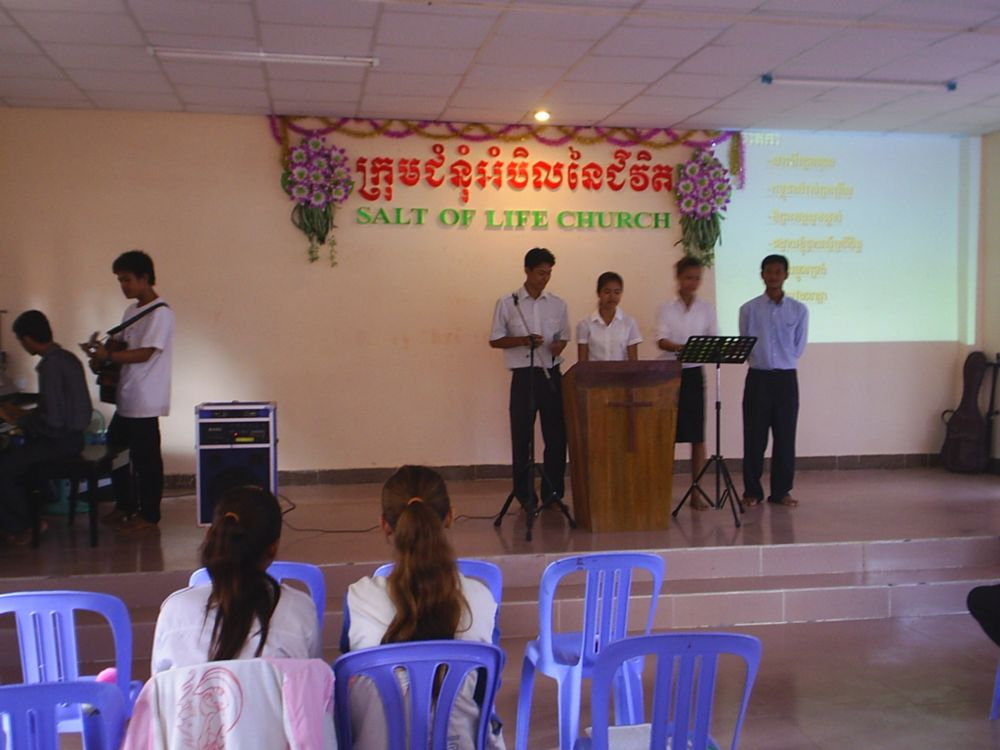
🍲 은혜와 사랑을 나누는 식탁
예배가 모두 끝난 후에는 다 같이 모여 앉아 맛있는 식사를 나누었습니다. 예배의 은혜를 나누며 밥을 먹으니 그 교제의 식탁이 더욱 풍성하고 즐거웠습니다.
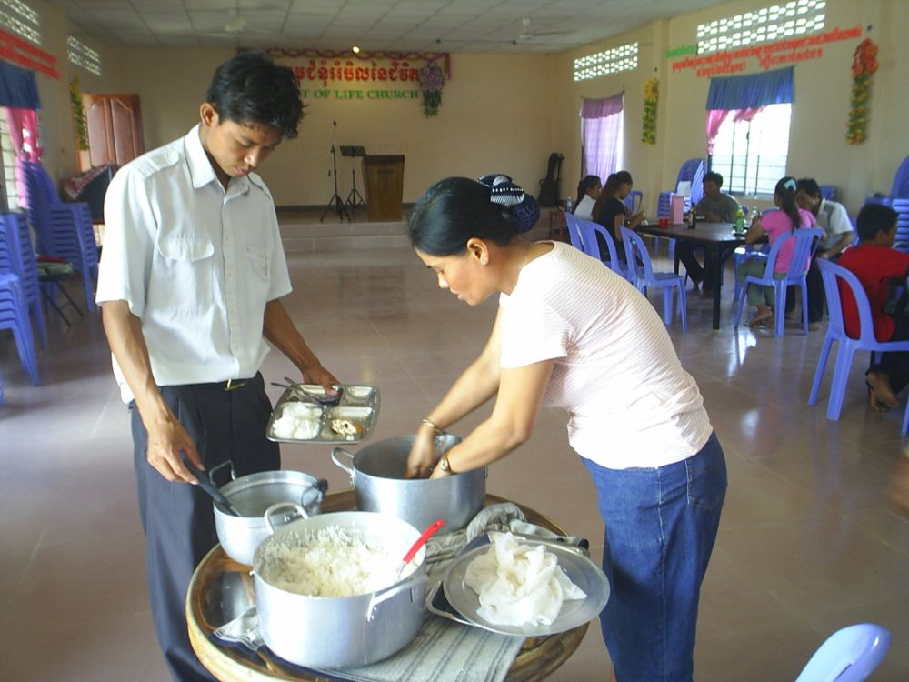
☀️ 캄보디아가 남긴 강렬한 흔적!
그런데 캄보디아에 며칠 머물다 보니, 제 몸에 아주 뚜렷한 변화가 생기기 시작했습니다. 바로 현지의 강렬한 햇빛에 살이 타서, 옷이나 신발 자국 그대로 선명한 '경계선'이 나타난 것입니다! 😂 캄보디아의 뜨거운 햇살을 온몸으로 체감하는 순간이었습니다.
💡 2008년 3월 9일의 기록 — 한 영혼이 주님께 돌아오던 벅찬 감격의 현장. 그리고 그곳에서 덤으로 얻은 유쾌한 추억을 나눕니다.
🚙 무작정 올라탄 차, 알고 보니 바닷가!
어느 날, 같이 있던 친구들이 어디를 간다고 했습니다. 그러면서 다짜고짜 같이 차를 타라고 하길래, 정말 어디로 가는지도 모르고 무작정 차에 올라탔습니다.
알고 보니, 현지 성도분들의 세례식을 위해 바닷가로 가는 길이었습니다!
세례식 장소에 가기 위해 2시간 반 정도 차를 타고, 덜컹거리는 언덕을 넘어 마침내 바닷가에 도착해 다 함께 예배를 드렸습니다.
💧 캄보디아식 침례 예식
이곳의 침례는 제가 알던 것처럼 몸이 뒤로 넘어지는 방식이 아니었습니다. 머리를 앞으로 푹 물에 담그는 예식이었습니다. 그 경건하고도 특별한 장면을 사진으로 담아보았습니다.
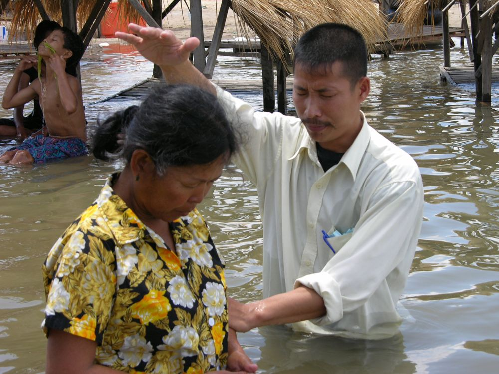
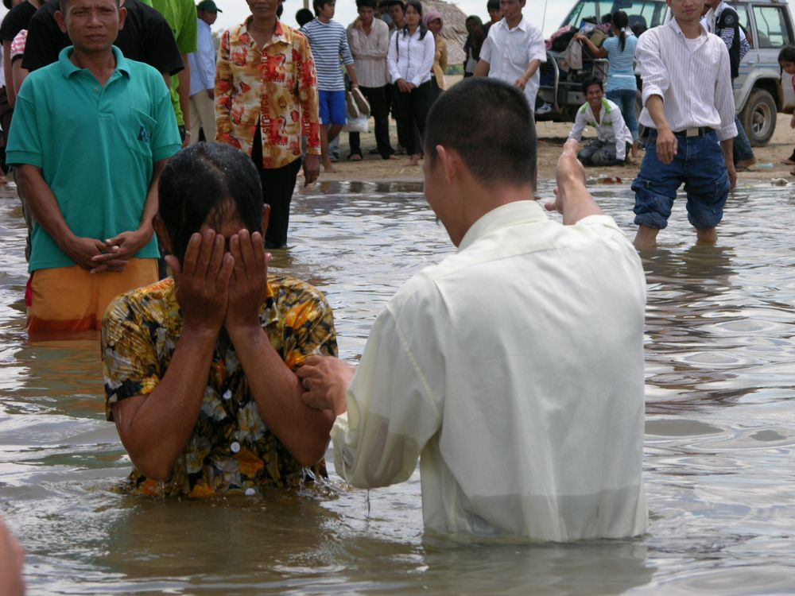
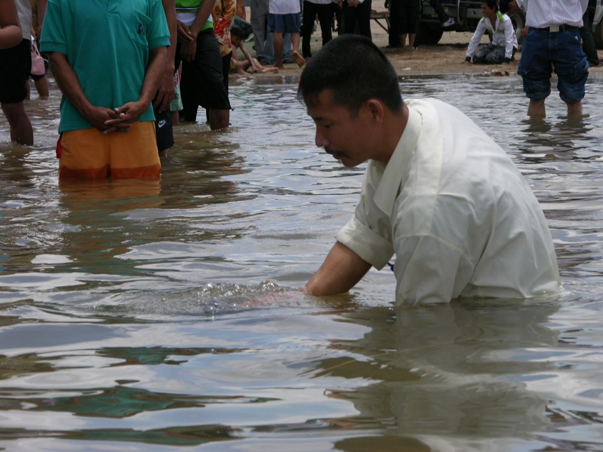
🙏 한 영혼이 주께 돌아오는 기쁨
한 영혼이 온전히 주님께 돌아오는 그 귀한 장소에 함께할 수 있어 참으로 감사했습니다. 함께 주님을 높이고, 그리스도 안에서 한 지체가 되어 그 기쁨을 나눌 수 있으니 마음이 너무나 벅차고 좋았습니다.
📸 주님의 자녀가 된 기쁨, 그리고 나의 '인생샷'
세례를 받은 사람들은 주님의 자녀가 되어 기쁘고, 저는 멋진 바다를 배경으로 '인생샷'을 건져서 기뻤습니다. 😄
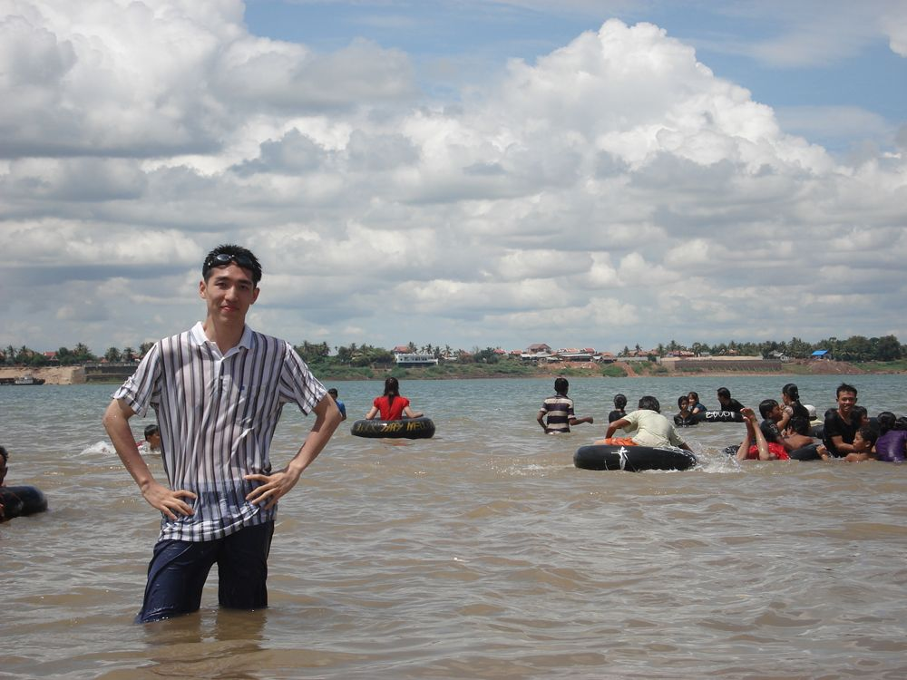
🏊 보너스 컷
개헤엄은 보너스샷 🐶💦
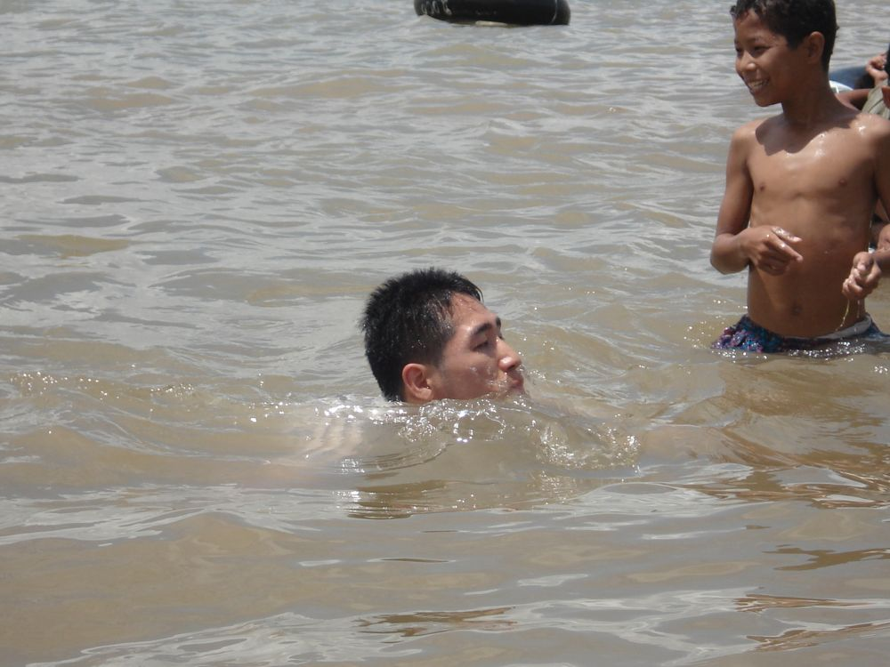
신대원 3학년 시절, 감사하게도 사역하던 교회의 양해를 구하고 휴가를 받아 아내와 함께 캄보디아행 비행기에 올랐습니다. 🛫 선교라는 길은 저 혼자만의 결단으로 갈 수 있는 것이 아니라, 사랑하는 아내와 함께 걸어가야 하는 길이었기 때문입니다. 👫
저는 이미 2008년에 캄보디아에서 지내본 경험이 있었고, 체질상 추운 곳(러시아 🥶)보다는 더운 곳(캄보디아 🥵)이 훨씬 더 잘 맞았기에 늘 캄보디아를 품고 기도하고 있었습니다.
하지만 가장 중요한 것은 '과연 아내도 그곳의 환경을 견딜 수 있을까? 캄보디아를 마음에 들어 할까?' 하는 것이었고, 이번 방문은 바로 그 마음을 확인하기 위한 아주 중요한 답사였습니다. 🔍
출국 전, 2008년에 섬겼던 선교사님께 조심스레 연락을 드렸는데 너무나도 흔쾌히 가이드를 자처해 주셨습니다. 🙏 막상 캄보디아에 도착하니, 선교사님께서는 프놈펜에서부터 씨엠립 앙코르와트까지 그야말로 '풀코스'로 저희를 안내해 주셨습니다.
제가 예전에 1년 동안 머물면서도 가보지 못했던 새롭고 아름다운 곳들만 쏙쏙 골라 보여주셔서 얼마나 감사했는지 모릅니다. ✨
예전에 앙코르와트를 갈 때는 차로 오랜 시간 이동했었는데, 이번에는 무려 경비행기를 타고 가는 신기하고 특별한 경험도 했습니다! 🛩️
앙코르와트 내부에서는 사진이 가장 잘 나오는 핫스팟 장소까지 친절히 알려주셔서, 아내와 함께 정말 귀하고 멋진 인생 사진도 남길 수 있었습니다. 📸
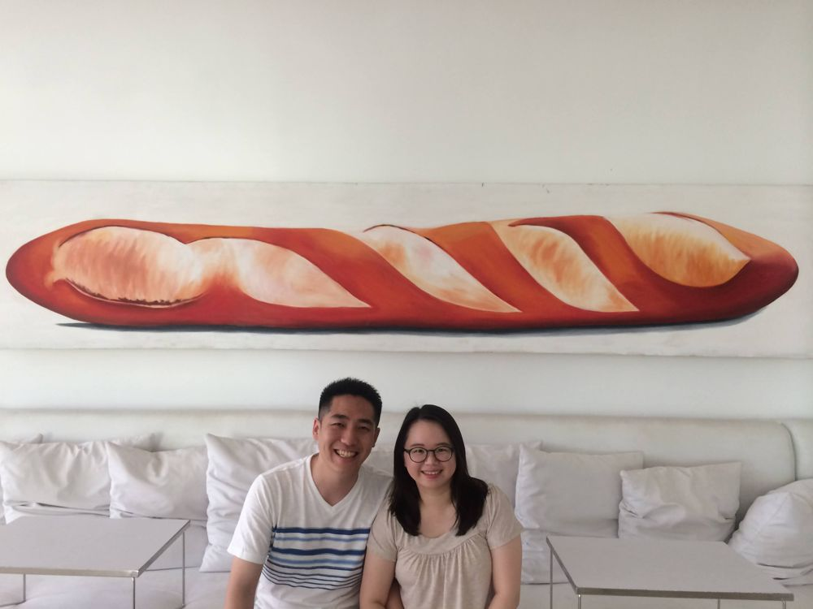
선교사님의 따뜻한 섬김 덕분에 캄보디아에서 너무나 좋은 추억을 한가득 안고 돌아올 수 있었습니다. 아마도 이때 아내의 마음속에 '캄보디아, 생각보다 괜찮네! 싫지 않다.'라는 긍정적인 마음이 싹튼 것 같습니다. 💖
아내가 그곳을 힘들어하지 않고 함께 나아갈 수 있겠다는 확신을 얻은 것! 그것만으로도 이번 답사는 정말 엄청난 수확이었습니다. 🌾
그리고, 바로 이 답사 기간 동안 제 인생에 아주 큰 전환점이 되는 놀라운 일이 기다리고 있었으니...
바로 '캄장신(캄보디아장로교신학교)'과의 만남이었습니다. 🏫 (이 가슴 벅찬 이야기는 다음 글에서 이어집니다! 😉)
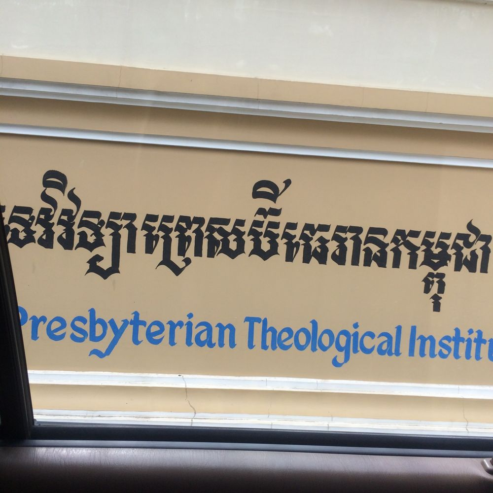
💡 2008년 11월 무렵의 기록 — 캄보디아 단기선교 중 잠시 다녀왔던 이웃 나라 베트남. 프놈펜에서 호찌민까지의 버스 여정과 솔직하고 유쾌한 쌀국수 투어 추억을 나눕니다.
🚌 프놈펜에서 호찌민으로
정확한 날짜는 기억나지 않지만 연말쯤 되었을 무렵이었습니다. 선교사님께서 "단기 선교사는 옆 나라를 다녀와야 한다"며 베트남 여행의 귀한 시간을 허락해 주셨습니다.
캄보디아 프놈펜에서 베트남 호찌민까지는 버스로 이동이 가능했는데, 대략 6~7시간 정도가 걸리는 꽤 긴 여정이었습니다.
🚲 차창 밖으로 스쳐가는 베트남의 풍경
버스를 타고 국경을 지나 창밖의 논밭을 가만히 바라보고 있으니, 하얀색 옷을 입고 전통 모자를 쓴 채 자전거를 타는 여성분들의 모습이 눈에 들어오기 시작했습니다. '아, 정말 베트남에 왔구나' 실감 나던 순간이었습니다.
하지만 도심으로 들어갈수록 그런 고즈넉한 풍경 대신, 도로를 가득 메운 엄청난 수의 오토바이 떼가 시선을 사로잡았습니다! 🏍️💨
🥭 나 홀로 시장 투어와 달콤한 망고
호찌민에 도착해 혼자서 여유롭게 시장 구경을 나섰습니다. 시장 곳곳을 둘러보고, 그 맛있고 달달한 망고도 사서 먹으며 꿀맛 같은 휴식을 즐겼습니다.
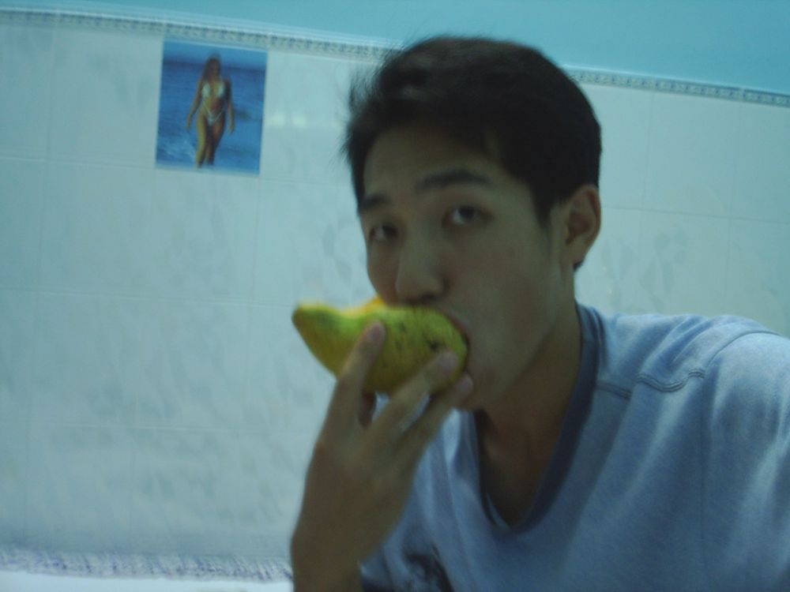
🍜 쌀국수 맛집 투어 (그리고 반전!)
여행 지도를 펼쳐보니, 마침 호찌민에서 쌀국수로 유명한 집이 두 곳이나 있다고 하더라고요. 기대를 가득 품고 두 곳을 모두 들러 쌀국수 맛을 보았습니다.
그런데… 솔직히 저는 한국에서 먹는 쌀국수와 베트남 현지 쌀국수의 차이를 잘 모르겠더라고요. 🤣 제 입맛이 둔한 걸까요? 그래도 참 즐겁고 든든한 식사였습니다!
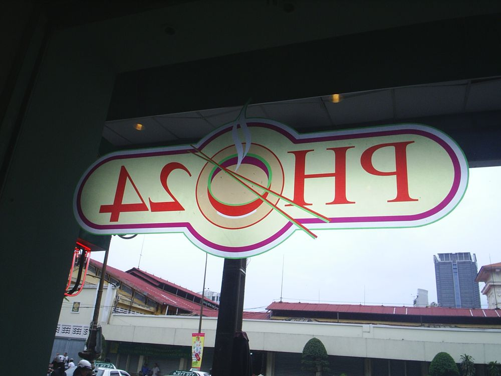
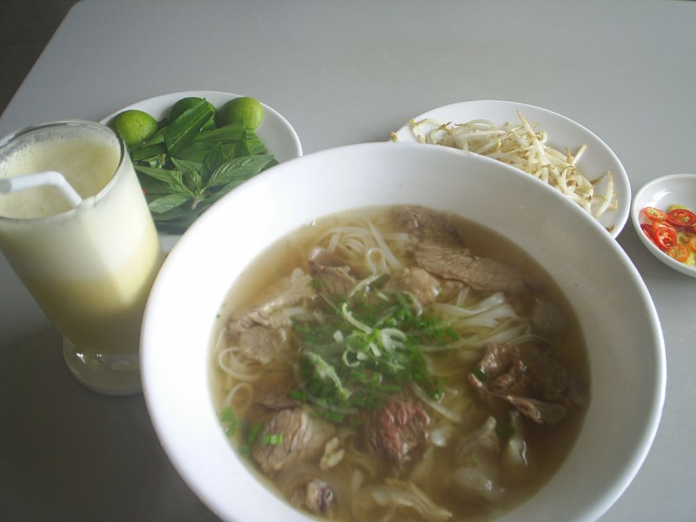
💡 2008년 9월 어느 날의 기록 — 한국과는 사뭇 달랐던 캄보디아 현지 결혼식의 이모저모와, 돌아오는 길에 겪은 소소하고 유쾌한 에피소드를 나눕니다.
캄보디아 현지 결혼식에 초대를 받아 다녀왔습니다. 직접 겪어본 캄보디아의 결혼식 날은 일반적인 일상과 비교했을 때, 크게 두 가지의 뚜렷한 차이가 있었습니다.
🎪 첫째, 집 앞을 가득 채운 거대한 텐트 예식장
가장 먼저 눈에 띄었던 것은 바로 '결혼식장'이었습니다. 캄보디아에서는 전문 예식장을 빌리는 대신, 집 앞에 커다란 텐트를 여러 개 치고 성대하게 결혼식을 올리더라고요. 친한 친구들과 함께 그 흥겨운 잔칫집에 기쁜 마음으로 참석했습니다.
💄 둘째, 눈부시게 아름다운 변신!
두 번째로 놀라웠던 건 바로 하객들의 '화장'이었습니다. 결혼식에 참석하는 현지 여성분들이 평소의 수수했던 모습과는 완전히 다르게, 무척이나 화려하고 아름다운 모습으로 단장하고 등장하셔서 깜짝 놀랐습니다. 역시 아름다움을 사모하고 예쁘게 가꾸고 싶어 하는 마음은 세계 어디를 가나 똑같은 것 같습니다. 🥰
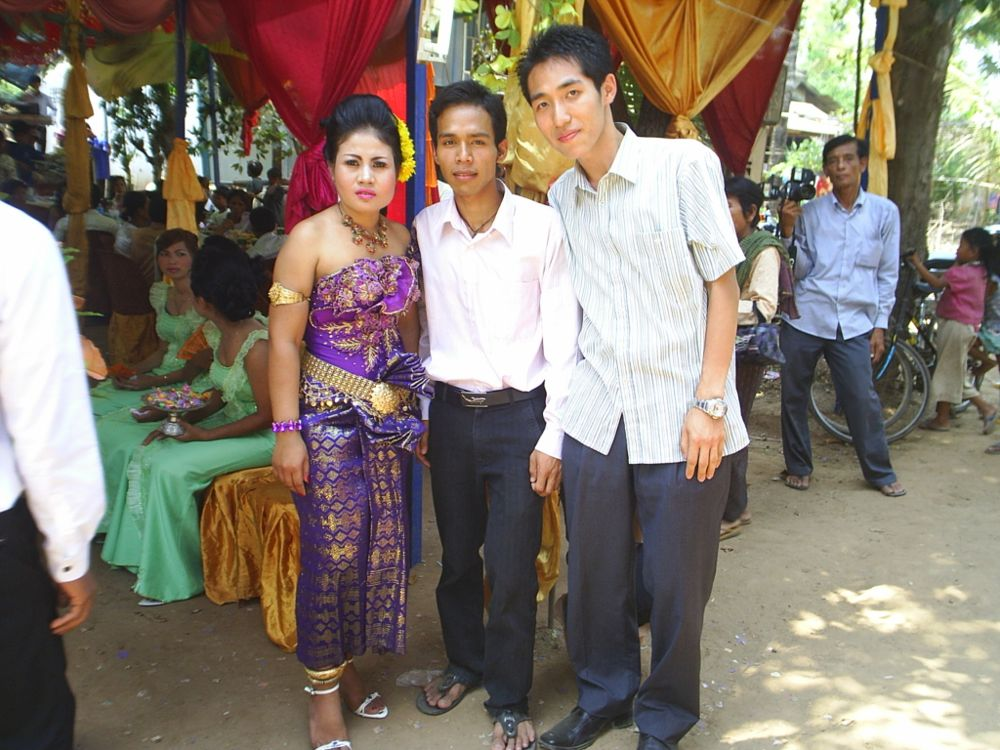
🛠️ 돌아오는 길, 타이어 수리공(?)으로 변신
결혼식을 즐겁게 마치고 돌아오는 길, 타고 가던 차 타이어에 뜻밖의 문제가 생겨서 급하게 길에서 수리를 해야만 했습니다.
당황스럽고 고생스러울 수도 있는 상황이었지만, 오히려 이 순간도 재밌는 추억이겠다 싶어 커다란 수리 도구를 들고 장난스럽게 포즈를 취해봤습니다! 📸
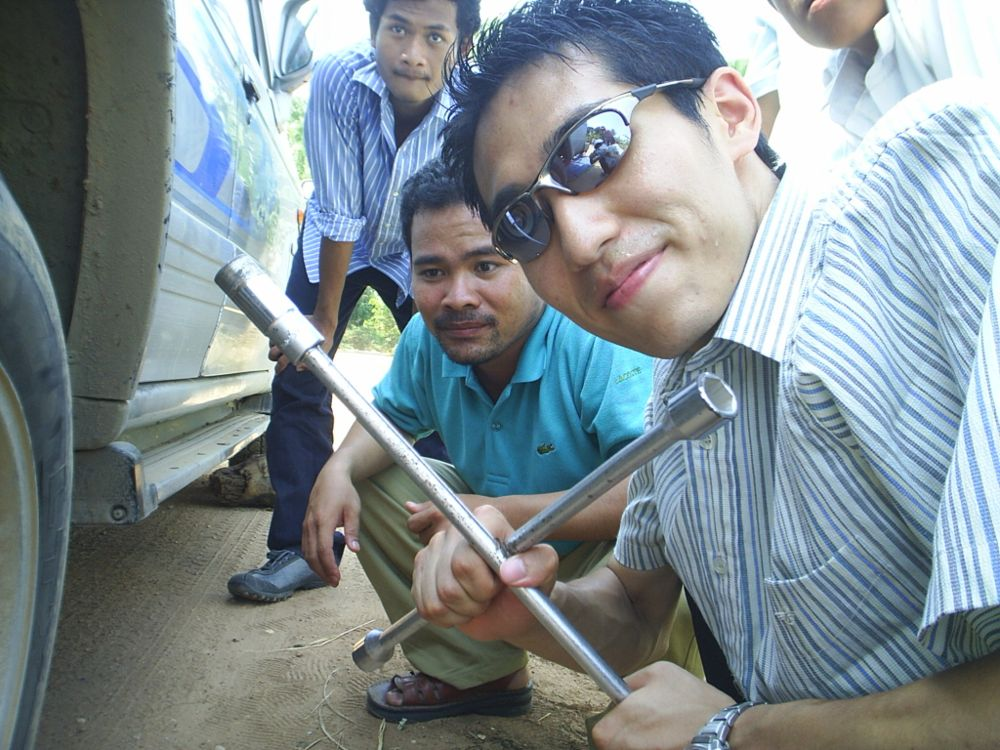
💡 2008년 7월 어느 날의 기록 — 한국으로 향하는 캄보디아 사람들의 간절함, 지금은 상상하기 힘든 그 시절의 낯선 풍경, 그리고 오랜 시간이 흘러 다시 마주한 상전벽해의 감동을 나눕니다.
📝 '코리안 드림'을 향한 발걸음과 안타까움
당시 캄보디아의 많은 사람들이 한국에 가서 일하기 위해 한국어 시험을 봤습니다. 길거리에는 '한국에서 몇 년 일하면 1억을 번다'는 전단지들이 나돌았는데, 그 과장된 문구를 보면서 현지 사람들이 혹시나 헛된 기대를 품고 상처받지는 않을까 하는 안타까운 마음도 들었습니다.
당시 제가 사역하던 NPIC(캄보디아 국립 기술 대학)에서 한국에 가기 위한 지원서를 접수했기 때문에, 모집 기간이 되면 정말 수많은 사람들이 몰려와 캠퍼스가 발 디딜 틈 없이 붐볐습니다.
🚙 지붕까지 사람을 실어 나르던 그 시절의 자동차
2008~2009년도 캄보디아의 길거리에는 지금 우리의 눈으로 보면 깜짝 놀랄 만한 풍경들이 참 많았습니다.
가장 신기했던 것 중 하나는 바로 자동차였습니다. 좁은 차 한 대에 믿기지 않을 정도로 많은 인원이 타는 것도 모자라, 아예 차 지붕 위까지 사람들이 빼곡하게 올라가 위태롭게 달리는 모습이 일상처럼 펼쳐졌습니다.
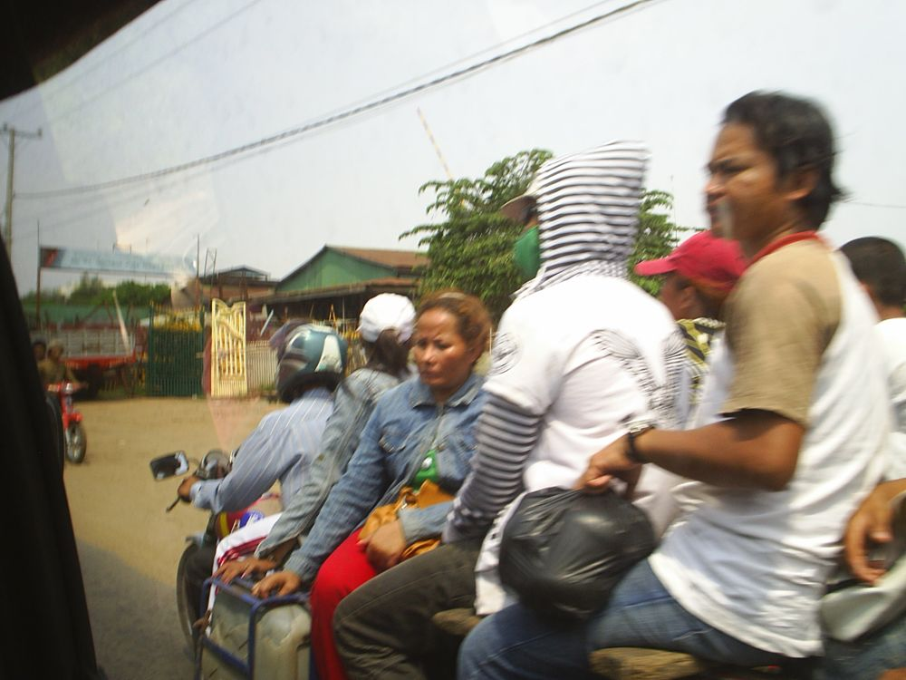
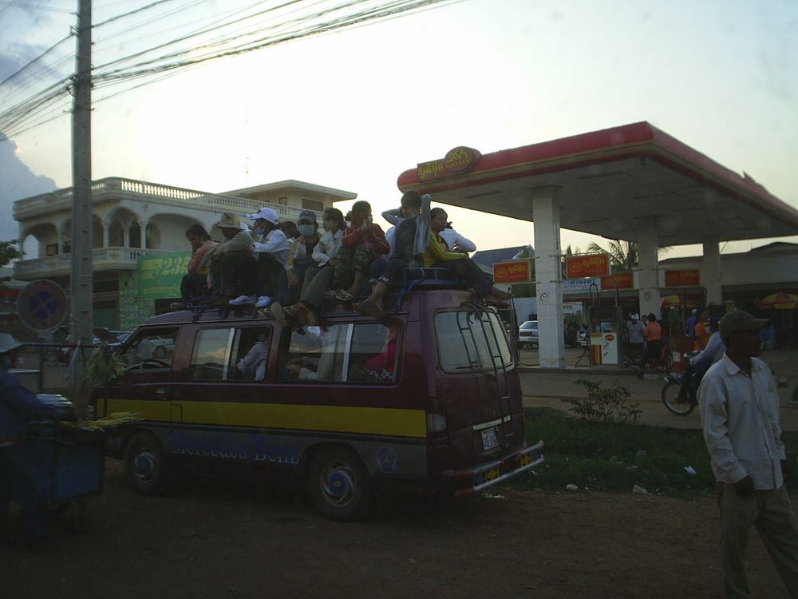
✨ 18년의 세월이 만든 상전벽해 (2026)
그렇게 열악하고 낯설었던 캄보디아였는데, 2026년에 다시 방문해 보니 정말 완전히 다른 나라처럼 새로워져 있었습니다.
'상전벽해(桑田碧海)'라는 말이 이런 거구나, 하고 뼛속 깊이 느낄 정도였습니다. 눈부시게 발전한 캄보디아의 모습을 보며, 이 새롭게 변화된 땅에 부어질 하나님의 비전과 앞으로 펼쳐질 사역들에 더욱 큰 기대를 품게 됩니다.
💡 2008년 3월의 기록 — 현지 학생들과 함께 동고동락하며 땀 흘렸던 WD(World Development) 센터. 무더위와 벌레와 싸워야 했지만, 돌아보면 모든 것이 은혜였던 그 시절의 숙소 생활을 나눕니다.
🛖 나의 보금자리, WD 센터
NPIC 정문 길 건너에는 WD(World Development) 센터가 자리 잡고 있습니다. 저는 그곳에서 학생들과 함께 먹고, 자고, 부대끼며 생활했습니다.
※ WD 센터는 현재 '아둘람 센터'로 불립니다.
제가 처음 이곳에 발을 디뎠던 2008년 2월에만 해도, 왼쪽 편에 다 지어진 건물 하나밖에 없는 소박한 모습이었습니다.
🍲 잊을 수 없는 마더의 밥상과 저녁 모임
그곳에는 NPIC 대학생 4명(형제 3명, 자매 1명)과 숙소를 살뜰히 관리해 주시는 '파더'네 가족이 함께 지내고 있었습니다. 특히 '마더'가 정성껏 만들어주시는 현지식 음식은 제 입맛에 딱 맞을 정도로 정말 맛있었습니다!
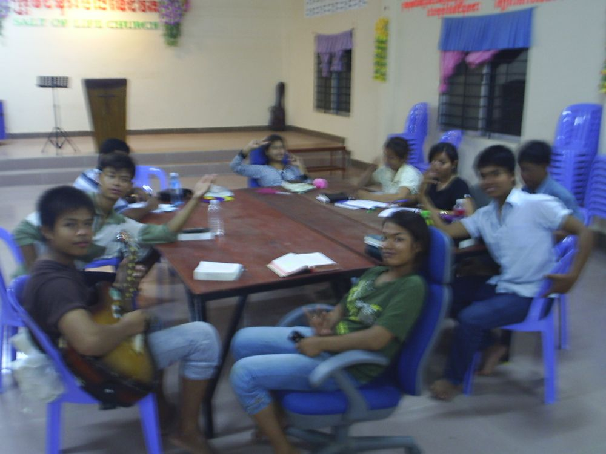
🏗️ 나와 함께 자라난 센터 건물
제가 머무는 기간 동안 센터는 쉼 없이 공사를 진행했습니다. 시간이 흘러 저의 1년 사역이 마쳐질 때쯤엔 어느덧 뼈대를 갖춘 콘크리트 공사가 무사히 마무리되어 있었죠. 건물이 자라나는 모습을 곁에서 지켜보는 것도 참 남다른 기분이었습니다.
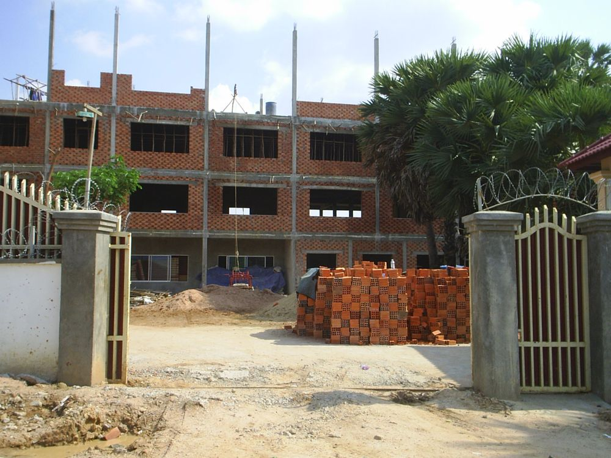
🛏️ 벌레, 그리고 멈춰버린 선풍기와의 사투
제 방에는 책상 하나, 침대 하나, 그리고 방 옆에 딸린 화장실이 있었습니다.
캄보디아의 특성상 벌레가 워낙 많아서 2~3일에 한 번씩은 꼭 바닥을 쓸어내고 닦아내야만 했습니다.
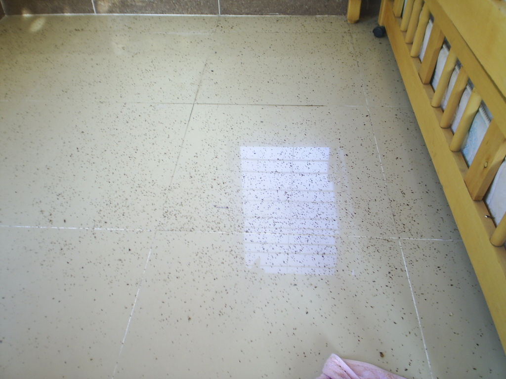
청소 전
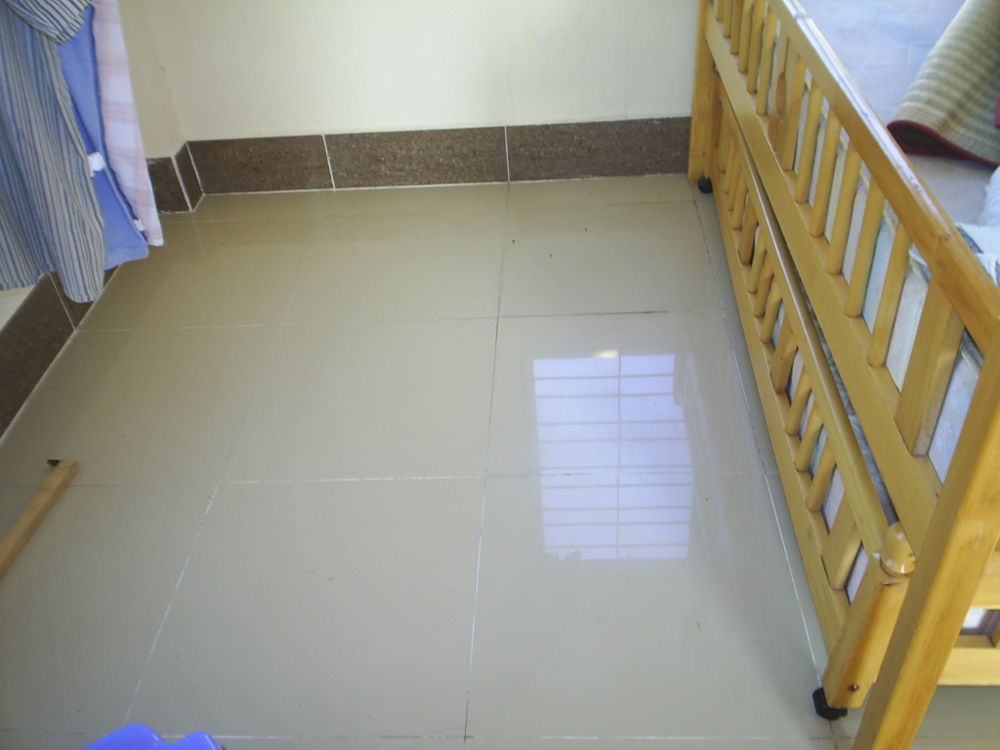
청소 후
가장 견디기 힘들었던 건 역시 캄보디아의 무더위였습니다. 침대 위에 천장형 팬 선풍기가 달려 있었지만 야속하게도 너무 느리게 돌았고, 그마저도 전기가 끊기는 날이면 아예 멈춰버리곤 했습니다…
정말이지 숨이 턱턱 막히는 더위에 자다가 깬 적이 한두 번이 아니었습니다. 🥵
몸은 참 고생스러웠지만, 지금 다시 그 시절을 생각해보면 참으로 귀하고 복된 경험이었습니다. 현지인들과 가장 가까운 곳에서 살을 부대끼며 그들의 삶을 이해할 수 있었던, 제 인생에 결코 잊지 못할 소중한 시간입니다.
💡 2008년 2월 어느날의 기록 — 기계과 조교로 섬기며 땀 흘렸던 캄보디아 국립 기술 대학(NPIC)의 풍경과, 평생 잊지 못할 캄보디아 친구들과의 풋풋한 추억을 꺼내어 봅니다.
💻 내 자리가 생기던 날
캄보디아 NPIC(National Polytechnic Institute of Cambodia)는 2005년 한국 정부의 지원으로 설립된 캄보디아 국립 기술 대학입니다.
당시 제가 섬겼던 선교사님께서 이곳 기계과 교수로 계셨기에, 저는 조교로 사역을 돕게 되었습니다. 마침 귀한 손길을 통해 컴퓨터를 새로 후원받게 되어 설치를 모두 완료하고, 제 자리 세팅까지 완벽하게 마친 뿌듯한 순간이었습니다. ✨
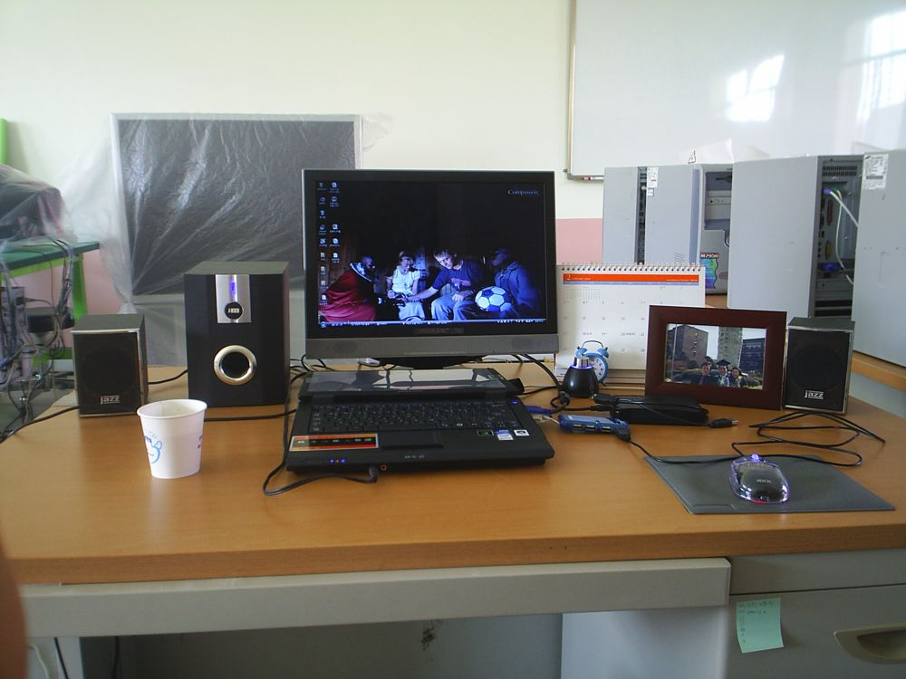
🎓 그리운 학생들과의 시간
함께 부대끼며 땀 흘리고, 학생들과 해맑게 웃으며 사진을 찍었던 그때 그 시간이 참 많이 그립습니다.
👫 평생의 추억이 된 캄보디아 친구들
사역하며 현지 친구들과도 정이 참 많이 들었습니다. 당시 저와 정말 친하게 지냈던 '3형제 1자매' 무리가 있었는데, 사진 속 친구는 그중 한 명인 '짠톨'입니다.
그리고 또 한 명의 소중한 친구, '킴희은'입니다. 사진을 가만히 보면 저와 킴희은 사이 저 너머로 제가 당시 머물렀던 숙소, 'WD 센터' 건물이 빼꼼히 보이네요. 🏢
💡 2008년 5월 7일의 기록 — 캄보디아 단기선교 3개월 차, 낯선 과일 '두리안'을 통해 진정한 '만원의 행복'과 나눔의 기쁨을 깊이 깨달았던 그날의 일기를 나눕니다.
💸 현지인들에게는 금값 같은 과일, 두리안
두리안은 1kg당 4,500리엘입니다. (당시 환율로 4,000리엘 = 1달러 = 1천 원) 보통 한 개당 3kg 정도 하니, 두 개를 사면 6kg입니다. 계산해 보면 거의 3~4만 리엘, 약 10달러 정도 되는 셈이죠. 이곳 현지 사람들의 물가로는 쉽게 사 먹지 못하는 꽤 비싼 과일입니다.
🤢 두려움을 넘어선 천상의 맛!
사실 전에 두리안을 처음 입에 댔을 때는 정말 토할 뻔했습니다. 이번엔 나름 망고나 트나웃 같은 다른 과일도 먹어보고, 꼭 먹어내겠다는 일념으로 '두리안 사탕'으로 연습까지 마친 상태였습니다. ㅋㅋㅋ
그렇게 두근거리는 마음으로 두리안을 사서, 저녁을 먹고 잘라 손에 쥐었는데… 이게 웬걸! 전에 났던 그 이상한 냄새와 맛은 하나도 안 나고, 씹어 먹는데 너무나 맛있는 겁니다! 아무래도 제가 캄보디아에 완벽하게 적응이 된 것 같았습니다.
'1년 끝나기 전에 꼭 먹어봐야지' 생각했는데, 단 3개월 만에 두리안의 참맛을 알아버렸습니다. 씹는 맛도 좋고 너무나 부드러웠습니다.
🤤 집을 팔아서라도 먹는다는 그 맛
저녁을 먹고 샤워를 한 뒤, 양치질까지 하고 성경을 읽으러 다 같이 모였는데… 제 입에서 두리안의 향기와 맛이 도무지 사라지질 않았습니다.
'아, 내일 또 먹을까…'
정말 또 먹고 싶은 욕심이 절로 생기고 엄청난 유혹이 몰려왔습니다. 사람들이 왜 집을 팔아서라도 두리안을 먹으려 하는지 이제야 알 것 같았습니다. 한 번 맛을 들이면 계속 생각이 나는, 절대 잊을 수 없는 맛입니다. (이건 정말 먹어본 사람만 압니다! 글을 쓰는 지금 이 와중에도 너무나 먹고 싶네요. ㅎㅎ)
💛 전 재산의 1/5, 진짜 '만원의 행복'
우리나라 돈으로 약 1만 원. 이 돈으로 사람들과 '함께' 두리안을 나누어 먹는다는 사실에, 저는 과일을 샀을 때부터 이미 너무나 행복했습니다.
맛도 맛이지만, 저에게는 '같이'라는 단어가 너무나 중요했습니다. 당시 제 개인 한 달 생활비가 50달러였으니, 사실상 전 재산의 1/5을 드리는 셈이었습니다.
하지만 진정한 '만원의 행복'은 내가 무언가를 아껴 쓰고 모으는 데 있는 것이 아니었습니다. 비록 적어 보일지라도, 그것을 다른 사람과 함께 나눌 때 비로소 진짜 행복이 있다는 것을 이번에 다시 한번 깊이 깨달았습니다.
🙏 작은불꽃의 기도
주님, 제게 이곳에 와서 잘 적응하게 해 주셔서 너무나 감사합니다. 또한 귀한 선교비를 통해 이곳 사람들에게 조그만 음식으로 사랑과 나눔을 갖게 해 주심에 감사합니다.
많이 가져서가 아니라, 많이 나눠줘서가 아니라, 내가 가지고 있는 조그만 것을 나눌 때 기쁨이 있음을 오늘도 느끼게 해 주셔서 감사합니다.
Mission Media
사진과 영상이 많아질수록 카테고리로 묶어 관리합니다. 메인에는 최신 항목만, 전체보기에서는 모두 볼 수 있습니다.
캄보디아 답사 — 공항, 동기 목사님 만남, 캄장신 방문
총회 선교사 훈련 수료

장신대 채플 총회선교 훈련생 대표 간증
장로회신학대학교 채플에서 총회선교 훈련생 대표로 간증한 영상입니다.

후원요청을 위한 첫 발걸음, 떨리는 마음으로 출발합니다
선교 후원 모집을 위한 첫 방문, 떨리는 마음을 담은 출정식 쇼츠 영상입니다.